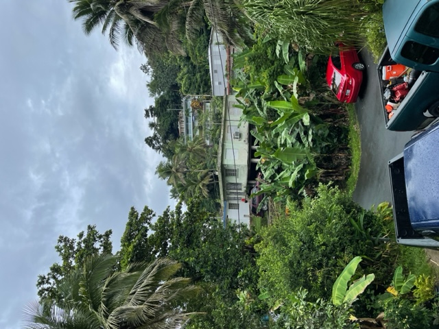
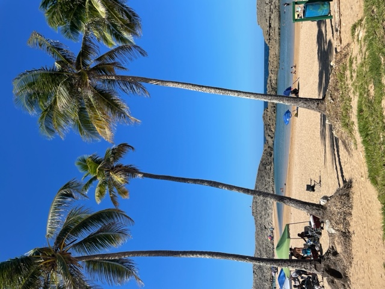
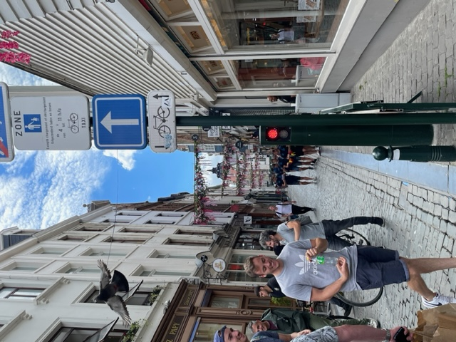
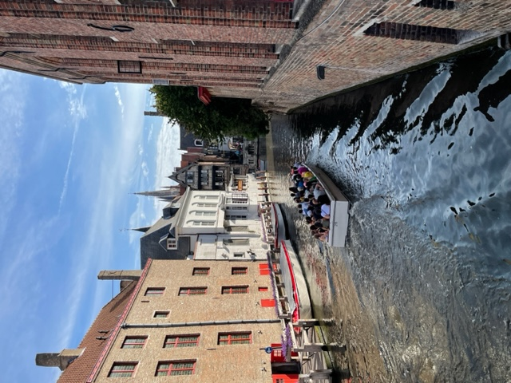
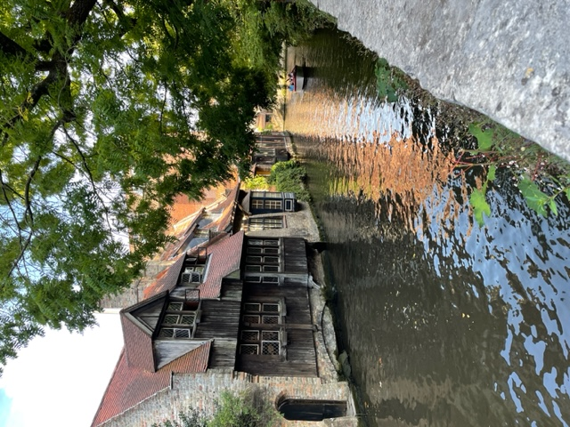

Puerto Rico


Fun Facts about Puerto Rico
- It is an unincorporated territory of the US
- The capital city of Puerto Rico is San Juan
- It is known for its warm and tropica weather
- Puerto Ricans are US citizens but cannot vote in the U.S Presidential elections
Great places to visit in Puerto Rico
- El Morro. You cannot leave Puerto Rico without visiting this amazing landmark. El Morro is a fort that the Spanish began to build in 1539 and it took over 200 years to complete. Explore the amazing architecture and the 6 levels containing dungeons, passageways, and cannons that face the ocean
- El Yunque National Forest. This is a must see before leaving Puerto Rico. El Yunque is a gorgeous Tropical rainforest in northeastern Puerto Rico that is known for its amazing trails and waterfalls. With the main trail taking you all the way up to the observation tower to overlook four types of the forest
- Viejo San Juan. This district of Puerto Rico is gorgeous and a very colorful part of the island. It is known for its amazing colonial architecture but also its cobblestone streets, the beautiful culture and people make it a place to remember
- Flamenco Beach. You definitely cannot leave without going to the most beautiful beach on the Island. Flamenco Beach is located in Culebra, Puerto Rico and is known as one of the top beaches in the world because of the beautiful white sand and turqoise water
Belgium



Fun Facts about Belgium
- Belgium has three offical languages: French, Dutch & German
- The national symbol of Belgium is the Manneken pis
- Belgium is known for the medieval towns and renaissance architecture
- It is also known for their music festivals, parades, and CHOCOLATE!
Great places to visit in Belgium
- Bruges. By far one of my favorite cities located in northwestern Belgium. It is best known for its beautiful canals and gorgeous medieval towns. While in Bruges it is important to see its famous landmark the Belfry of Bruges the medieval bell tower in the centre of Bruges, Belgium. Bruges has incredible museums and artwork to see
- Brussels. The capital city of Belgium. While in Brussels a must see is the Grand Palace that is located in the center of the city, it is gorgeous landmark surrounded with many restaurants and stores. Brussels is known for their incredible architecture and cuisine including the famous waffles and french fries
- Antwerp. One of Belgium's largest cities and it known for their diamonds. They even have an entire distric dedicated to them. Just like the other cities Antwerp is famous for their Architecture like the Antwerp Central Station and Cathedral. The Groenplaats city square is a nice place with many restaurants, cafes, and shops
- Ghent. The perfect city to visit in Belgium because it isn't really famous. Some gorgeous places to see in Ghent is St. Bavo’s Cathedral and the Castle of Counts, these two places are incredible and definitely picture worthy. Another fun thing is taking a canal cruise, you can get an amazing tour of the city and facts about the architecture